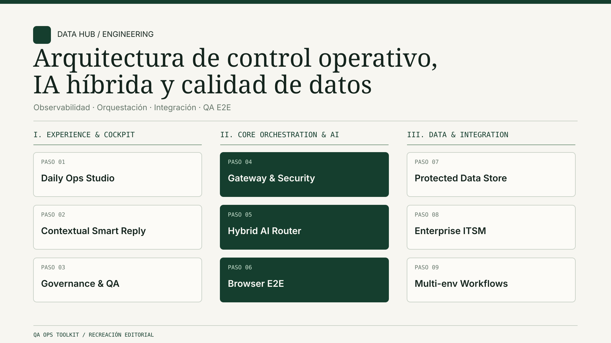

Caso de ingeniería · Arquitectura y QA
Cómo organicé control operativo, asistencia contextual, integración y validaciones E2E en una arquitectura de nueve módulos.

El flujo integra preparación operativa, contexto de incidencias, controles de acceso, orquestación, pruebas de extremo a extremo y trazabilidad. El gráfico explica responsabilidades y conexiones lógicas, no métricas de producción.
La necesidad
Preparar tareas, revisar incidencias, ejecutar pruebas y conservar evidencias exige conectar responsabilidades que suelen depender de herramientas distintas. Hacía falta una visión clara de qué hace cada componente y cómo se relaciona con los demás.
El problema
Cuando las actividades operativas, la consulta de contexto, la verificación y la integración se gestionan de forma separada, se repiten pasos y cuesta reconstruir el recorrido completo de una ejecución.
Diferentes fuentes y verificaciones con puntos de revisión manual.
Capas diferenciadas con controles, evidencia y trazabilidad.
Cómo lo solucioné
El diseño organiza nueve capacidades. Sus nombres en la ilustración son referencias conceptuales para explicar el sistema sin exponer contratos ni datos internos.
I. Experiencia y control operativo
Preparación y seguimiento de actividades operativas y sesiones de trabajo.
Asistencia contextual para generar borradores revisables a partir de la información disponible.
Indicadores y evidencia de prueba para supervisar calidad y consistencia.
II. Orquestación y asistencia
Controles de entrada y validaciones previas al procesamiento.
Asistencia contextual con alternativas basadas en reglas locales.
Automatización de recorridos de prueba y puntos de verificación reproducibles.
III. Persistencia e integración
Persistencia controlada y trazabilidad del flujo operativo.
Integración estructurada de incidencias y contexto de otros sistemas.
Coordinación de flujos entre entornos y comprobaciones de ejecución.
El resultado
Una representación técnica coherente que permite explicar las responsabilidades de cada módulo y su participación en el flujo operativo, la validación y el seguimiento.
Recreación conceptual para el portafolio: no implica que todas las capacidades estén desplegadas ni declara resultados operativos no verificados.
Diagrama y narrativa reconstruidos a partir de referencias visuales del proyecto. Vista sanitizada para presentación pública.